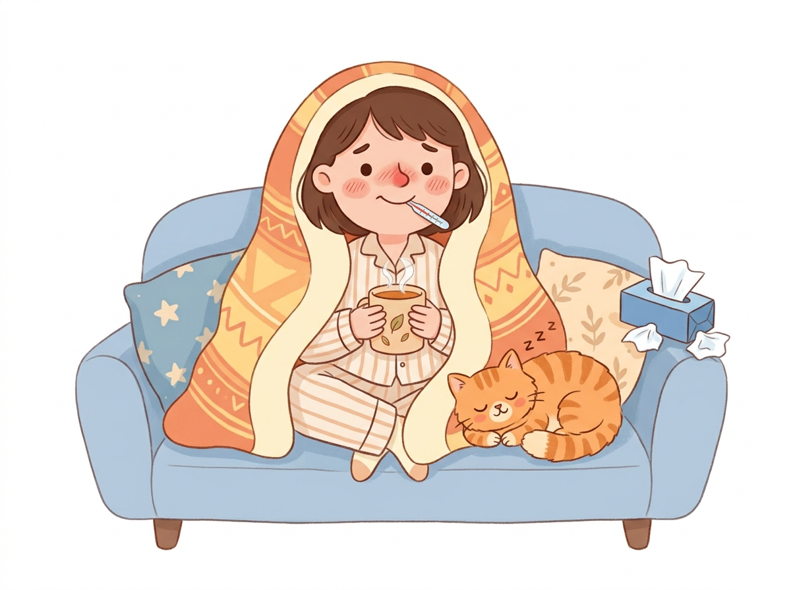
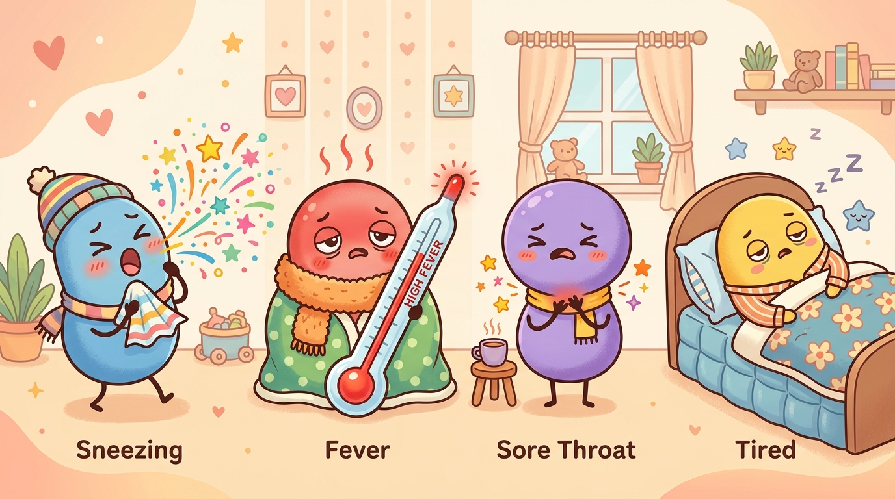
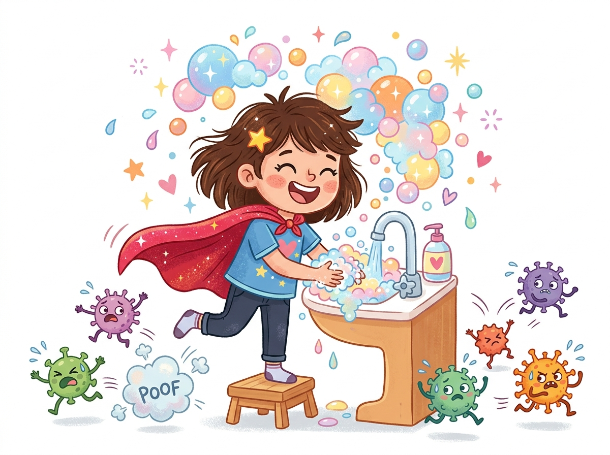
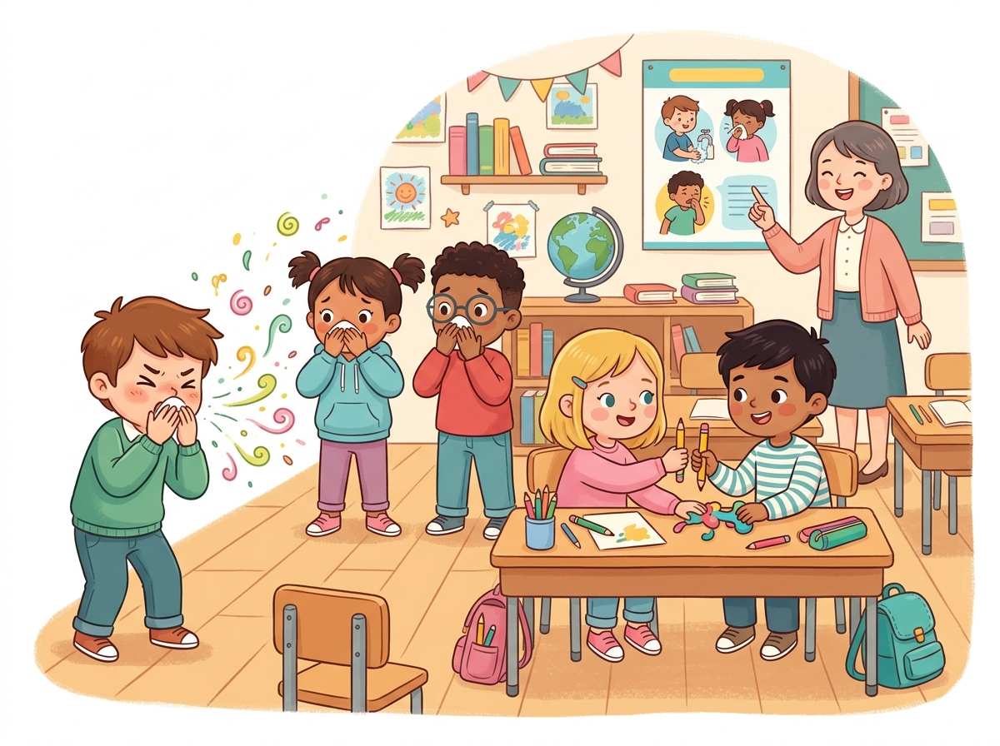
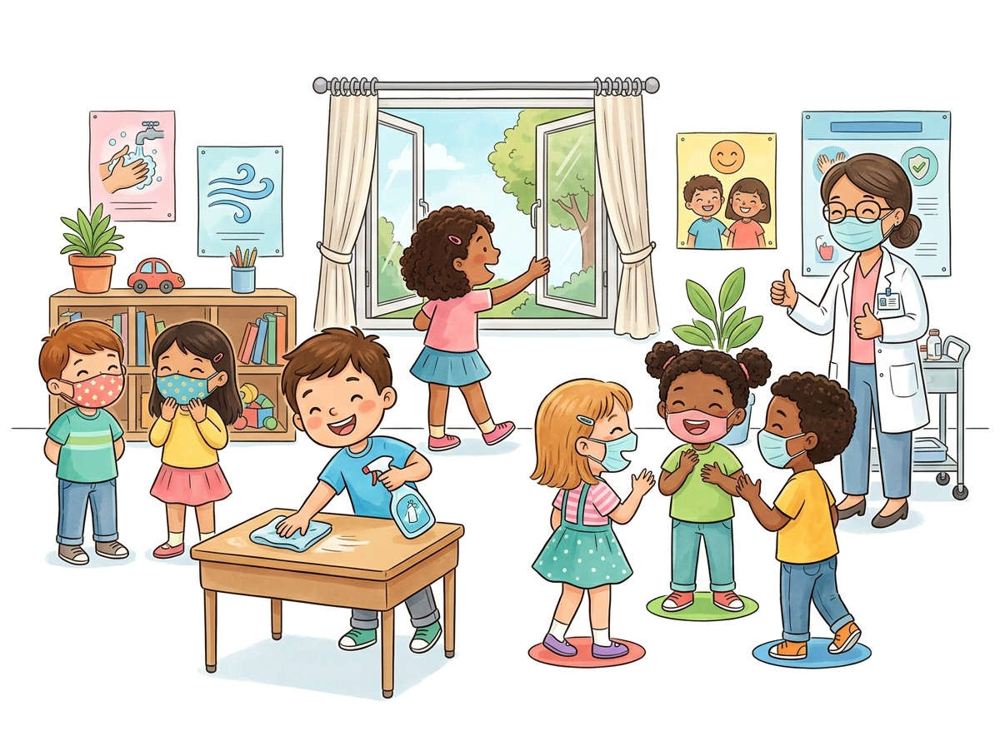

Hãy cùng chúng mình khám phá thế giới virus cúm theo cách dễ hiểu nhất — từ cách nó xâm nhập cơ thể, triệu chứng thường gặp, đến bí quyết phòng tránh hiệu quả.

Cúm thường đến nhanh và mạnh hơn cảm lạnh thông thường. Đây là những dấu hiệu phổ biến nhất mà bạn cần để ý.

Thân nhiệt tăng vọt 38–40°C, thường đến rất nhanh trong vài giờ, kèm ớn lạnh và run rẩy.
Cơ bắp và khớp đau mỏi, đặc biệt ở lưng và chân. Cảm giác như vừa chạy marathon mà chẳng tập luyện gì.
Mũi chảy nước liên tục, hắt hơi không ngừng. Hộp khăn giấy trở thành người bạn thân nhất.
Kiệt sức đến mức chỉ muốn nằm cả ngày. Cảm giác mệt này có thể kéo dài 1–2 tuần sau khi khỏi bệnh.
Họng sưng đỏ, rát khi nuốt. Ho khan dai dẳng, đôi khi kèm đờm. Giọng nói khàn đặc.
Nhức đầu nặng, thường đau ở vùng trán và sau mắt. Ánh sáng và tiếng ồn có thể làm nặng thêm.
Virus cúm (Influenza) thuộc họ Orthomyxoviridae, chỉ có đường kính khoảng 80–120 nanomét — nhỏ hơn sợi tóc người tận 1000 lần! Nhưng đừng coi thường, mỗi năm nó khiến 3–5 triệu người mắc bệnh nặng trên toàn cầu.
Bề mặt virus có 2 loại protein quan trọng: Hemagglutinin (H) giúp nó bám vào tế bào, và Neuraminidase (N) giúp nó thoát ra sau khi nhân bản. Đó là lý do ta gọi các chủng là H1N1, H3N2, H5N1...
Điều khiến virus cúm "ranh ma" là khả năng đột biến liên tục. Mỗi mùa, nó khoác lên mình "bộ áo mới", khiến hệ miễn dịch không nhận ra — và đó là lý do bạn cần tiêm vaccine mới mỗi năm.
Bạn không cần phải là bác sĩ để bảo vệ bản thân. Chỉ cần nhớ 3 điều đơn giản này.
Vaccine cúm là "lá chắn" hiệu quả nhất. WHO khuyến cáo tiêm trước mùa cúm 2 tuần. Vaccine hiện đại bao gồm 3–4 chủng, giảm 40–60% nguy cơ nhập viện. An toàn cho trẻ từ 6 tháng tuổi.

Rửa tay bằng xà phòng ít nhất 20 giây — hát "Happy Birthday" 2 lần là đủ! Virus cúm sống được 24 giờ trên bề mặt cứng, nên hãy cẩn thận với tay nắm cửa, điện thoại và bàn phím.
Khi có triệu chứng, hãy ở nhà nghỉ ngơi. Uống nhiều nước ấm, ăn súp gà (nghiên cứu cho thấy thật sự có tác dụng!), ngủ đủ giấc và tránh lây cho người khác.

Trường học là nơi tập trung đông người trong không gian kín. Trẻ em có hệ miễn dịch chưa hoàn thiện, thói quen vệ sinh chưa tốt và tiếp xúc gần nhau liên tục — tạo điều kiện lý tưởng cho virus cúm "bùng nổ" chỉ trong vài ngày.
Lớp học đóng kín cửa sổ khiến giọt bắn chứa virus lơ lửng trong không khí hàng giờ, dễ dàng lây cho cả lớp.
Bút, thước kẻ, sách vở mượn qua mượn lại — virus cúm sống được 24 giờ trên bề mặt cứng.
Ngồi sát nhau khi ăn, chia sẻ thức ăn, không rửa tay trước khi ăn — con đường lây nhiễm nhanh nhất.
Bắt tay, ôm nhau, chơi đùa, chen lấn khi xếp hàng — trẻ em tiếp xúc gần gấp 3 lần người lớn.
Xe đưa đón chật hẹp, nhiều trẻ ngồi sát nhau trong không gian kín — virus lan từ trường về nhà trong nháy mắt.
Nhiều học sinh vẫn đến trường dù có triệu chứng nhẹ, trở thành nguồn lây "im lặng" cho cả lớp.

Chỉ cần thực hiện đều đặn những biện pháp đơn giản này, tỷ lệ nghỉ học vì cúm có thể giảm tới 50%. Cả thầy cô, phụ huynh và học sinh đều đóng vai trò quan trọng!
Mở cửa lớp 10–15 phút mỗi giờ giúp luân chuyển không khí, giảm 60% lượng virus trong phòng kín.
Gel sát khuẩn ở cửa ra vào, cạnh bảng và khu vực ăn uống. Nhắc rửa tay trước giờ ăn và sau khi đi vệ sinh.
Quy định rõ: sốt trên 37.5°C = ở nhà nghỉ. Một trẻ bệnh đi học có thể lây cho 2–3 bạn mỗi ngày.
Lau bàn, ghế, tay nắm cửa bằng dung dịch khử khuẩn mỗi buổi. Đặc biệt là máy tính, bàn phím dùng chung.
Khi 80% học sinh được tiêm phòng, "miễn dịch cộng đồng" hình thành — bảo vệ cả những bạn chưa tiêm.
Dạy trẻ che miệng khi ho bằng khuỷu tay (không phải bàn tay!), không chạm mắt mũi miệng, và rửa tay đúng cách.
Dữ liệu tổng hợp từ CDC, WHO và các nghiên cứu dịch tễ học tại trường học ở nhiều quốc gia
Tùy chỉnh số Dãy, Bàn, Chỗ ngồi. Chọn ca F0 ban đầu và kéo thanh trượt hoặc bấm Phát Mô Phỏng để quan sát chuỗi lây lan thực tế từng ngày!
Mô hình SEIR mở rộng (Ủ bệnh 2 ngày, phát bệnh 1 ngày, cách ly 5 ngày, hồi phục có kháng thể bền vững). Tổng số ca kiểm soát thực tế không vượt quá sĩ số lớp (30).
| Mốc thời gian | Ca nhiễm mới (Ủ bệnh) | Đang ủ bệnh (2 ngày) | F0 phát bệnh trong lớp | Nghỉ cách ly ở nhà | Đã khỏi (Kháng thể) | Còn khỏe mạnh | Tỷ lệ nghỉ học (%) | Cấp độ dịch |
|---|
Biểu đồ tự động cập nhật từ số liệu đã nhập. Tùy chọn xem toàn cảnh quá khứ và các mốc tương lai.
Một cái hắt hơi có thể phóng ra 40.000 giọt bắn nhỏ li ti, bay xa tới 8 mét. Nhanh hơn cả xe máy chạy ngoài đường!
Hầu hết các chủng cúm A đều bắt nguồn từ chim hoang dã, đặc biệt là vịt trời. Chúng mang virus nhưng hiếm khi phát bệnh.
Nghiên cứu từ Đại học Nebraska cho thấy súp gà có tác dụng chống viêm nhẹ, giúp giảm triệu chứng nghẹt mũi và đau họng.
Virus cúm sống lâu hơn trong không khí lạnh, khô. Đó là lý do mùa đông là "mùa cúm". Ở Việt Nam, dịch cúm thường đạt đỉnh tháng 6–9 (mùa mưa).
Màn hình điện thoại chứa vi khuẩn và virus nhiều gấp 10 lần bồn cầu. Hãy lau điện thoại bằng khăn khử khuẩn mỗi ngày trong mùa cúm!
Bạn đã biết cách phòng cúm rồi — giờ hãy chia sẻ cho người thân và bạn bè cùng biết nhé.
🏠 Đọc Lại Từ Đầu